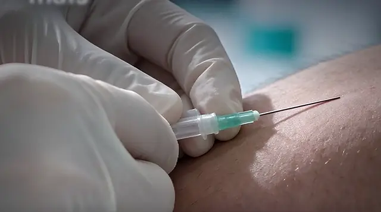
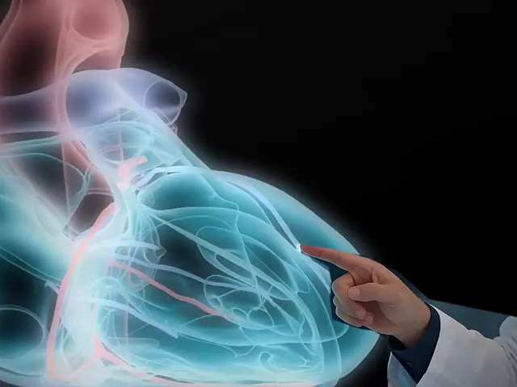

Cinco etapas.
Uma manhã.
Do começo ao fim da manhã, o seu coração é olhado por inteiro: em repouso, em movimento, por dentro e no sangue. E quem te recebe na consulta é quem explica o resultado.
Como é a manhã
Uma etapa depois da outra, no mesmo lugar.
00 chegada
Você chega, e a manhã já está organizada
A enfermagem confere documentos, a lista de remédios e o preparo, e explica a sequência do dia.
-
01 a conversa
Consulta
- O que é
- Uma conversa sem pressa com o cardiologista, com exame físico: pressão, coração e pulmões auscultados, peso e medidas.
- Para que serve
- Entender o seu perfil de risco e decidir quais exames fazem sentido para você. Nem todo mundo precisa de tudo.

-
02 a atividade elétrica do coração
Eletrocardiograma
- O que é
- Pequenos eletrodos adesivos no peito, nos braços e nas pernas captam os sinais elétricos de cada batimento.
- Para que serve
- Mostrar o ritmo, a frequência e como o estímulo elétrico percorre o coração.

-
03 o ultrassom do coração
Ecocardiograma
- O que é
- Um ultrassom do coração, com gel e um transdutor apoiado no peito, sem radiação.
- Para que serve
- Ver a estrutura do coração funcionando: paredes, cavidades, válvulas e o fluxo do sangue.

-
04 o coração no esforço
Teste ergométrico
- O que é
- Caminhada na esteira com esforço que aumenta aos poucos, com eletrodos e pressão medida durante todo o teste.
- Para que serve
- Avaliar como o coração se comporta quando precisa trabalhar mais, como numa escada ou num treino.

-
05 colesterol, glicose e mais
Exames de laboratório
- O que é
- Coleta de sangue feita no próprio local, na mesma manhã.
- Para que serve
- Medir o que não aparece no espelho nem costuma dar sintoma, como o colesterol e a glicose.

06 resultado
O cardiologista explica tudo, no mesmo dia
O que cada exame mostrou, o que pede atenção e os próximos passos. Pode perguntar à vontade.
Preparo
O que fazer antes do dia.
O preparo exato vai por escrito na confirmação do agendamento, porque depende dos exames indicados para você. Em geral, é isto:
Confirme o preparo na mensagem de agendamento
Ele depende dos exames indicados para você. A equipe manda tudo por escrito antes do dia.
Venha com roupa confortável e tênis
O teste ergométrico é feito na esteira. Se preferir, traga uma troca de roupa.
Siga a orientação de jejum que vier na confirmação
Ela vale para os exames de sangue. Água costuma ser liberada, mas confirme com a equipe.
Não pare nenhum remédio por conta própria
Traga a lista do que você usa, com as doses. Se tiver dúvida sobre algum, pergunte antes.
Traga exames anteriores do coração, se tiver
Eletros, ecos e exames de sangue antigos ajudam o cardiologista a comparar.
Reserve a manhã inteira
As etapas acontecem em sequência, sem pressa. A ordem pode mudar no dia, conforme o preparo de cada exame.

Depois da manhã
Você sai sabendo o que fazer a partir daqui.
- A explicação de cada exame, em português claro
- As orientações do cardiologista por escrito
- Quando voltar, e o que acompanhar até lá
Conteúdo informativo, não substitui a consulta.
Quanto tempo leva?
Uma manhã. As cinco etapas acontecem em sequência, no mesmo lugar, sem você precisar voltar outro dia para cada exame.
Preciso de jejum?
Depende dos exames de sangue indicados para você. A orientação de jejum vai por escrito na confirmação do agendamento. Não pare nenhum remédio por conta própria.
O que devo levar?
Documento com foto, a lista dos remédios que você usa (com as doses), exames anteriores do coração, se tiver, e roupa confortável com tênis para a esteira.
Todo mundo faz os cinco exames?
Não necessariamente. Os exames são definidos conforme o seu perfil de risco, na consulta. Às vezes um deles não é indicado, ou precisa de outro preparo.
Posso levar alguém comigo?
Pode. Muita gente prefere vir acompanhada, principalmente para ouvir junto a explicação do resultado.